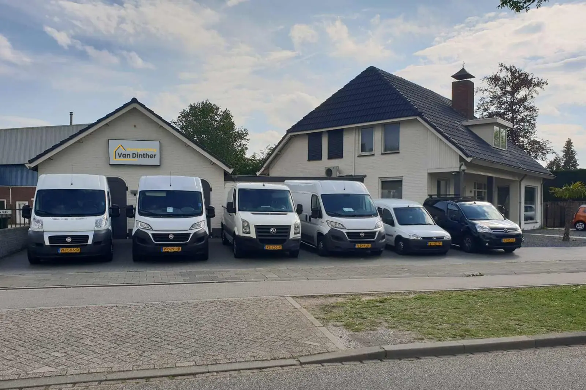

In het kort
- Onze showroom zit aan De Vutter 23a in ’s-Hertogenbosch. U bent welkom op afspraak.
- Onder één dak: vloeren, wand- en plafondafwerking, raambekleding en zonwering.
- Liever advies thuis? Dan komen we langs en meten we ter plekke in.
Is uw interieur toe aan een opfrisbeurt? Bij Van Dinther Woninginrichting in Den Bosch bent u aan het juiste adres. Hier vindt u alles voor een stijlvolle inrichting van uw woning of bedrijfspand. Benieuwd naar de mogelijkheden? Lees verder, of maak een afspraak en kom langs in onze showroom.
Alles voor uw woning onder één dak
Interieurwinkels zijn er veel. Niet gek dat u door de bomen het bos niet meer ziet. Onze specialisten geven u interieuradvies op maat, vanuit uw wensen en behoeften. Zo weet u precies waar u aan toe bent en ziet u direct wat er kan. Bij Van Dinther Woninginrichting heeft u alles onder één dak.
PVC vloeren
Zoekt u een sterke vloer die weinig onderhoud vraagt? Dan is een PVC vloer een uitstekende keuze. Ons assortiment bestaat uit vloeren van verschillende leveranciers, dus er zijn opties voor elk budget. Een PVC vloer heeft u al vanaf € 34,95 per m². Laat u de vloer door onze specialisten leggen, dan betaalt u vanaf € 59,95 per m².
Wand- en plafondafwerking
Een mooie afwerking van uw wanden en plafond bepaalt de uitstraling van uw woning. Kiest u voor glad stucwerk met een sierlijst, of gaat uw voorkeur uit naar Spachtelputz? Onze specialisten werken uw wanden en plafond af naar wens, zodat de ruimte klaar is om in te richten.
Raambekleding
Een woning of bedrijfspand is pas compleet met de juiste raambekleding. We adviseren u graag over houten jaloezieën, DUO rolgordijnen of gordijnen. In ons assortiment vindt u voor ieder wat wils.
Kom langs in onze showroom
Laat u inspireren in onze showroom en vraag naar de mogelijkheden. Onze interieuradviseurs geven u advies op maat. Wilt u liever dat we bij u langskomen voor vrijblijvend advies? Ook dat kan. Bij u thuis meten we ter plekke in en adviseren we u.
We werken uitsluitend op afspraak. U vindt ons aan De Vutter 23a, 5221 BD ’s-Hertogenbosch. Bel 073-8510785 of plan een afspraak.